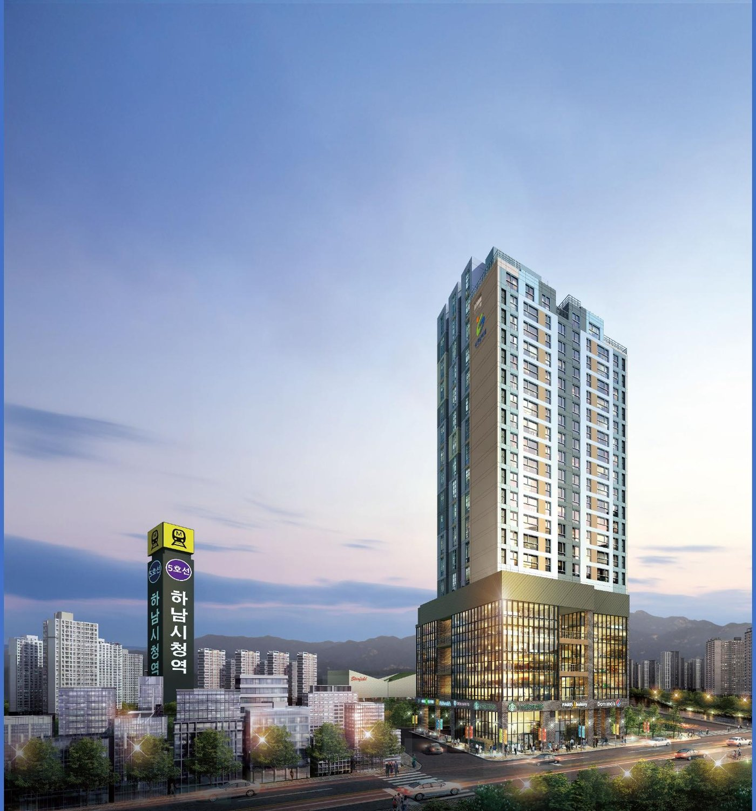
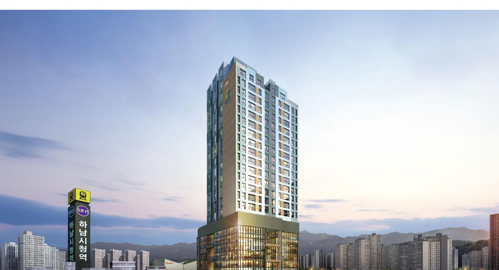
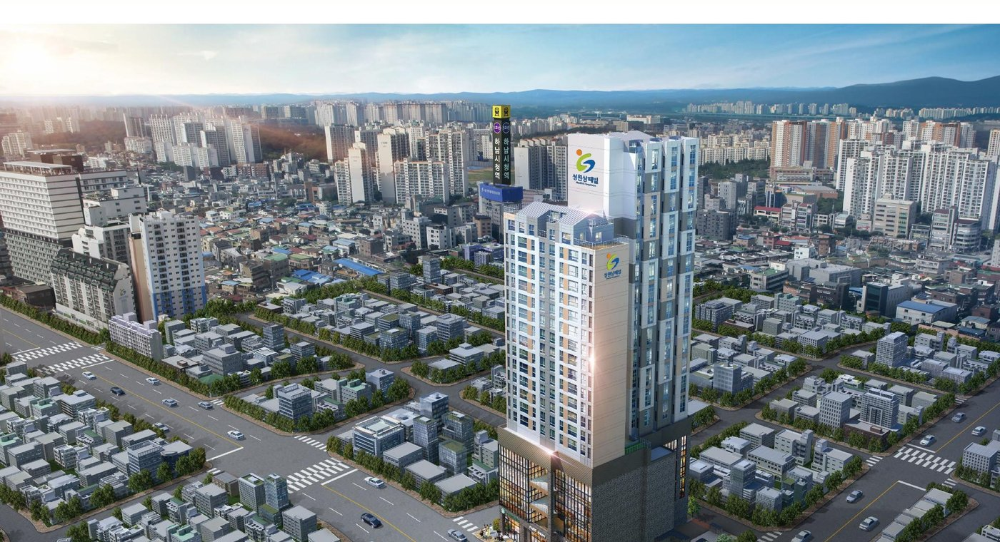
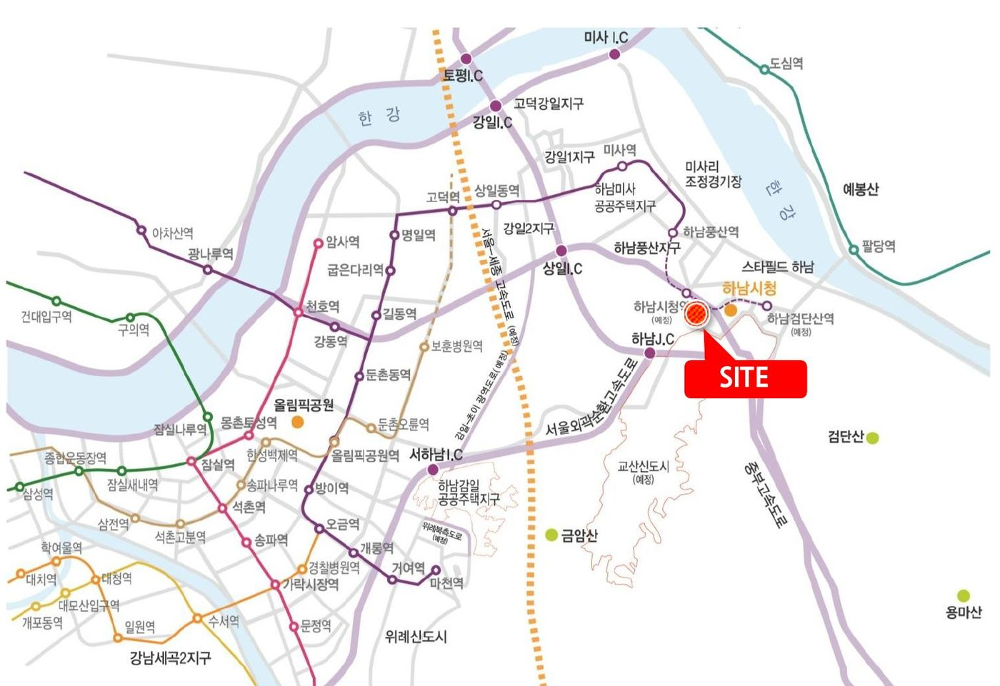
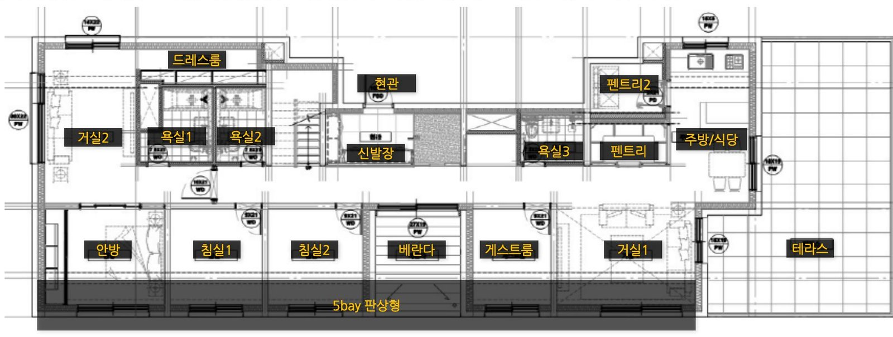

HANAM CITY HALL STATION SANTEVILLE
하남시청역
성원상떼빌
5호선 하남시청역 · 지상 19층 주상복합교산신도시·미사지구와 맞닿은하남 중심 프리미엄잔여세대 분양 · 복층 오피스텔
건축규모지하 5층 ~ 지상 19층
아파트29세대
오피스텔78실 (복층)
근린생활시설40실
SUMMARY
하남시청역 성원상떼빌 한눈에 보기
- 경기도 하남시 신장동 438-10번지 외 4필지 · 5호선 하남시청역 역세권 주상복합
- 지하 5층~지상 19층 · 아파트 29세대 · 오피스텔 78실 · 근린생활시설 40실
- 아파트 74A(28세대)·119A(1세대) · 복층 오피스텔 45A(72실)·45B(6실)
- 교산신도시·미사지구 인접 · 4Bay 판상형 · 오피스텔 천장고 약 3.8m
도시재생 중심
도시재생사업으로 미래가치 높은 하남 프리미엄의 최중심
신도시 수혜
3기 교산신도시 및 미사신도시 미래개발 최대 수혜
5호선 역세권
지하철 5호선 연장 하남시청역 도보 10분 거리
교통 개선
하남 교산신도시 광역교통개선대책 · 송파~하남시청간 도시철도 연장
원스톱 라이프
단지 내 스트리트형 근린상가 · 홈플러스·스타필드 하남 인접
특화설계
4Bay 판상형 아파트 · 전 호실 복층 오피스텔
| 타입 | 전용면적 | 계약면적 | 세대·실수 |
|---|---|---|---|
| 74A 아파트 | 74.50㎡ | 156.88㎡ | 28세대 |
| 119A 아파트 | 119.95㎡ | 254.45㎡ | 1세대 |
| 45A 오피스텔 | 45.11㎡ | 94.00㎡ | 72실 |
| 45B 오피스텔 | 45.11㎡ | 94.00㎡ | 6실 |
하남시청역 성원상떼빌 분양 상담 · 분양알리미 대표번호 1688-5650
PROJECT OVERVIEW
사업개요

- 현장명
- 하남시청역 성원상떼빌
- 대지위치
- 경기도 하남시 신장동 438-10번지 외 4필지
- 용도지구
- 일반상업지역, 방화지구
- 건축규모
- 지하 5층 ~ 지상 19층
- 구성
- B5~B1 주차장 / 1~4층 근린생활시설 / 5~17층 오피스텔·공공주택 / 18~19층 공공주택
- 공급규모
- 아파트 29세대 · 오피스텔 78실 · 근린생활시설 40실
- 대지면적
- 1,540.00㎡ (465.85평)
- 건축면적
- 1,072.38㎡ (324.40평)
- 연면적
- 16,900.79㎡ (5,112.49평)
- 건폐율 / 용적률
- 69.64% / 732.54%
- 주차대수
- 122대 (법정 110대)
조감도

LOCATION
강남·잠실·위례 접근성 우수한 하남 중심
서울 접근성
송파구·강동구 인접 · 미사지구·교산신도시와 맞닿은 입지
차량 교통
하남IC · 외곽순환 · 중부고속도로 진입 용이
대중교통
서울 5호선 연장 하남시청역 인접
생활 인프라
홈플러스 · 스타필드 하남 등 대형 쇼핑시설 인접

현장 주소경기도 하남시 신장동 438-10번지 외 4필지
UNIT PLAN
평면안내
4개 타입 평면도
타입을 누르면 해당 도면이 열립니다.
119A (아파트) 평면도
전용 119.95㎡(36.28평) · 공급 163.19㎡(49.36평) · 계약 254.45㎡ · 1세대 · 5Bay 4Room · 대형 테라스

CUSTOMER CONTACT
관심고객 접수
성함과 연락처를 남겨주시면 안내해 드립니다.
하남시청역 성원상떼빌 관련 검색어
- 하남시청역 성원상떼빌
- 하남 성원상떼빌
- 성원상떼빌 하남
- 하남시청역 아파트
- 하남 복층 오피스텔
- 하남시청역 주상복합
- 신장동 주상복합
- 하남시 주상복합 분양
- 하남시청역 성원상떼빌 분양가
- 하남시청역 성원상떼빌 모델하우스
- 하남시청역 성원상떼빌 평면도
하남시청역 성원상떼빌 분양 상담 · 대표번호 1688-5650